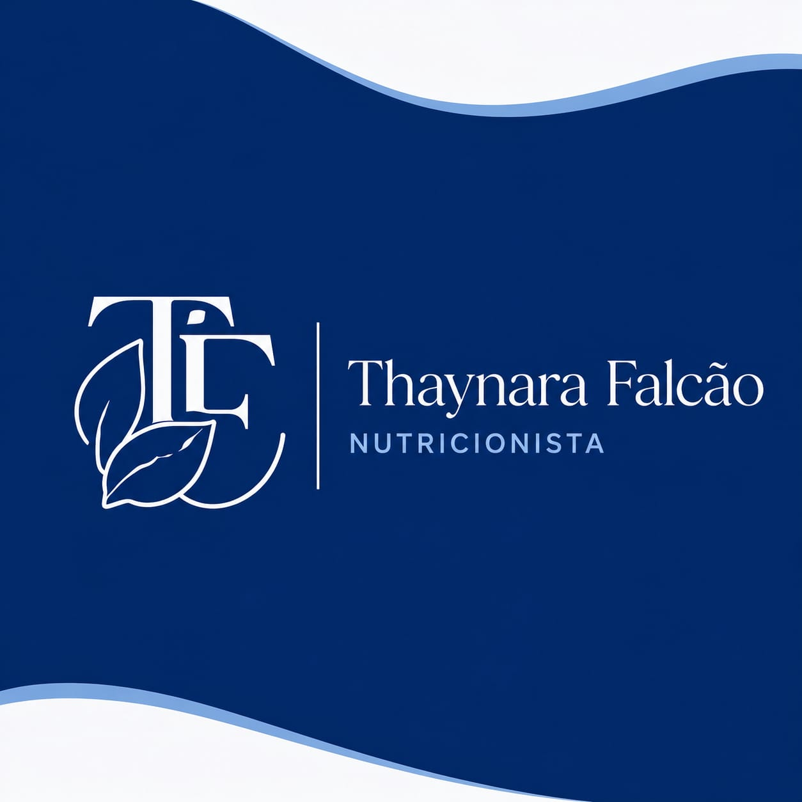

Atendimento clínico personalizado, consultorias para empresas, palestras e treinamentos voltados para saúde, alimentação e qualidade de vida.
Me chamo Thaynara Falcão, nutricionista clínica com pós-graduanda em fitoterapia. Sou dedicada a promover saúde por meio da alimentação consciente, segura e equilibrada.
Atuo no atendimento clínico com foco em Doenças Crônicas Não Transmissíveis (DCNT), Doença Renal Crônica (DRC) e Doenças Hepáticas, ajudando pessoas a transformarem sua relação com a alimentação, e também na área de segurança alimentar e controle de qualidade, auxiliando empresas a garantirem qualidade, higiene e conformidade.
Acredito que a nutrição vai além de dietas: ela é uma ferramenta de cuidado, prevenção e qualidade de vida. Por esse motivo, ofereço o método de atendimento comportamental, que une ciência, acolhimento e estratégias personalizadas para cada pessoa.
Atendimento individualizado e humanizado.
Saúde baseada em ciência e equilíbrio.
Qualidade, higiene e conformidade.
Atendimento especializado para pacientes, empresas e instituições.
Atendimento clínico comportamental personalizado com foco em saúde, reeducação alimentar e qualidade de vida.
Estratégias nutricionais integradas ao uso seguro e consciente de fitoterápicos.
Adequação de boas práticas, segurança alimentar e controle de qualidade.
Conteúdos educativos sobre saúde, alimentação, boas práticas e qualidade de vida.
Auxílio empresas na implementação de boas práticas, treinamento de equipes e adequação às normas sanitárias, promovendo mais segurança, qualidade e confiança.
Soluções personalizadas para pacientes e empresas, unindo cuidado, prevenção e ciência.
Solicitar OrçamentoEntre em contato para consultas, palestras, treinamentos ou consultorias empresariais.
Siga-me para dicas, receitas e conteúdos sobre nutrição, saúde e qualidade de vida.
Av. Pontes Vieira, 2340
Sala 1104
Fortaleza - CE
Online e presencial
Mediante agendamento
Agendar Horário